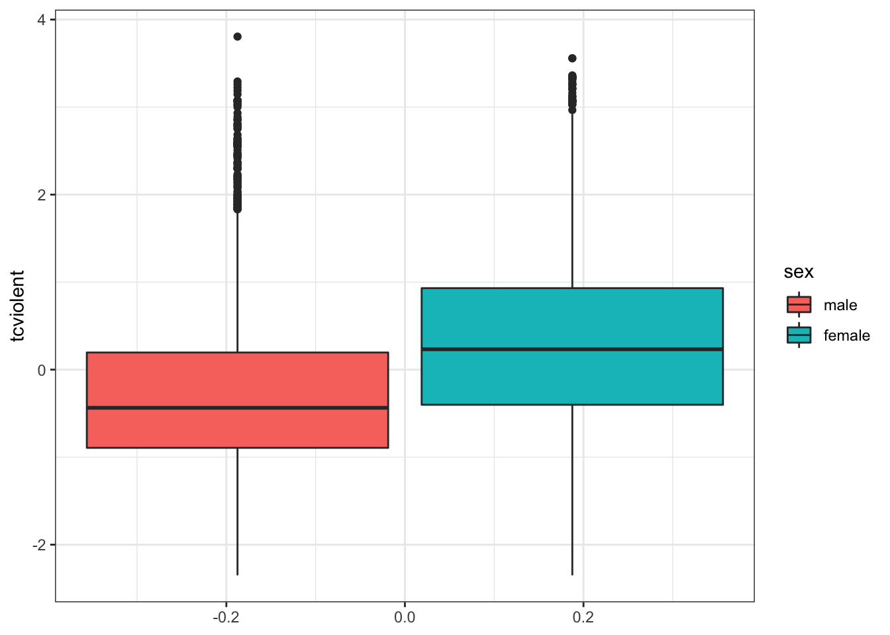
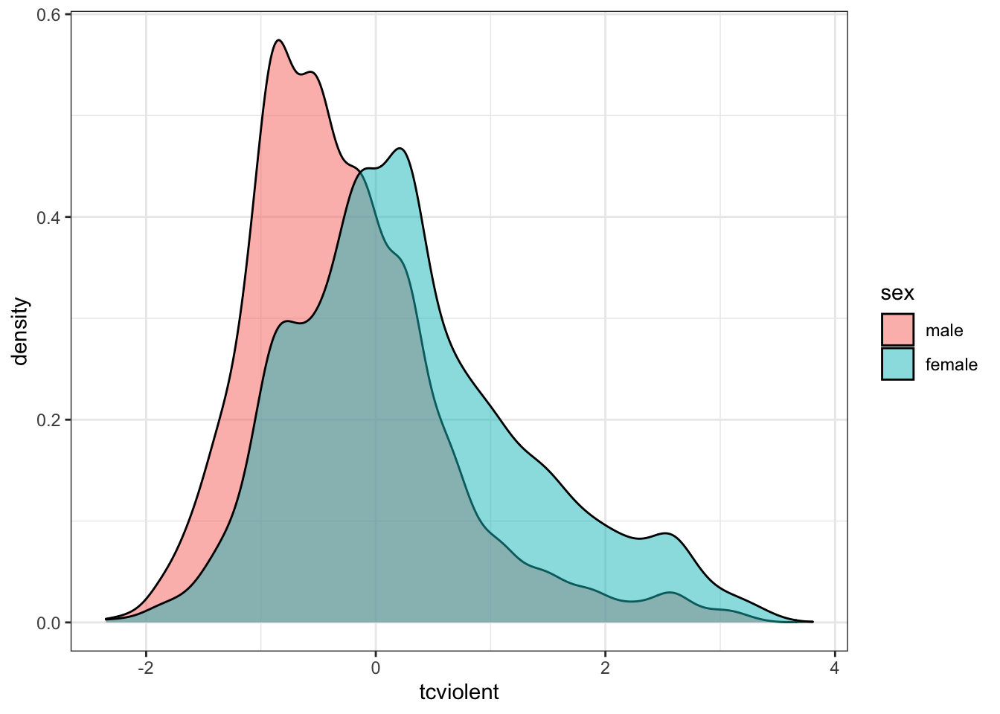

Chapter 7 Relationships with Categorical Variables
Independent and Dependent Variables, T-test, Chi-square
Learning Outcomes:
- Learn to arrange variables as independent and dependent variables
- Learn to test for statistical significance in relationships between two variables variables when:
- they are both categorical
- one is binary categorical and one is numeric
- Understand how to interpret outputs from t-tests and the chi-square test
Today’s Learning Tools:
Data:
- National Youth Survey (NYS)
- British Crime Survey (BCS)
Packages:
dplyreffsizeforcatsgmodelshavenherelabelledskimrvcdExtra
Functions introduced (and packages to which they belong)
chisq.test(): Produces the chi-square test (base R)CrossTable(): Produces contingency tables (gmodels)fct_explicit_na(): Provides missing values an explicit factor level (forcats)fisher.test(): Produces Fisher’s exact test (base R)merge(): Merge datasets by common row or column names (base R)n(): Count observations withinsummarize(),mutate(),filter()(dplyr)read_dta(): Imports a .dta Stata file (haven)t.test(): Performs one and two sample t-tests on vectors of data (base R)var.test(): Performs an F-test to compare the variances of two samples from normal populations (base R)with(): Evaluates an expression, often to specify data you want to use (base R)
7.1 Associating with Categorical Variables
We are familiar with categorical variables, which take the forms of nominal and ordinal level characteristics, can be binary (have only two possible values). In R, these variables are encoded as a factor class, and for shorthand, are referred to as factors.
In inferential statistics, sometimes we want to make predictions about relationships with factors. For example, we want to understand the relationship between sex and alcohol consumption. Perhaps we think males will have higher alcohol consumption than females. The variable, sex, in this example, is a binary factor with the two categories, male and female, whereas alcohol consumption is a numeric variable.
Today, we learn how to conduct more inferential statistical analyses, with categorical variables.
7.1.0.0.1 Activity 1: Our R prep routine
Before we start, we do the following:
Open up our existing
RprojectInstall and load the required packages listed above
Download from Blackboard and load into R the British Crime Survey (BCS) dataset (bcs_2007_8_teaching_data_unrestricted.dta ) using the function
read_dta(), specifying the working directory withhere(). Here I name it `BCS0708``.
BCS0708 <- read_dta(here("Datasets", "bcs_2007_8_teaching_data_unrestricted.dta"))- Get to know the datasets with the
View()function.
View(BCS0708)7.2 Today’s 3
We further our understanding of inferential statistics by learning more about variables and a couple of new statistical analyses that examine a relationship with factor variables. Our three topics today are: independent and dependent variables, the t-test, and the chi-square.
7.2.1 Independent and Dependent Variables
In learning to set hypotheses last week, we primarily wanted to know whether there was a relationship between certain variables. Inadvertently, we also were arranging our variables in a way that indicated one was the explanation and the other was the outcome.
Using our previous example on gender and fear of crime we can arrange them so that sex is the independent variable (\(X\)), which means that it is assumed to have an impact on the amount of fear of crime, the dependent variable (\(Y\)), which is considered to be influenced by \(X\). We believe that gender (\(X\)) has an influence on level of fear of crime (\(Y\)), and hypothesise, based on previous research, that males will have lower levels of fear of crime than females. We then select a sample, collect our data from that sample, and finally conduct an appropriate statistical test to find out.
An important point to remember is that although the independent variable (IV) is considered to impact on the dependent variable (DV), it does not mean the IV causes the DV. We can only arrange these variables in the direction we think is suitable and make statements about whether they are related to each other. Causal inference is a whole area of research, as establishing causal relationships is not an easy task. One approach we have covered/ made references to throughout your methodological educations is to use experimental research designs, such as randomised control trials. If you are interested in Causal Inference, I can strongly recommend Scott Cunningham’s Causal Inference Mixtape. But for the kinds of analysis we’ll be doing here, best keep in mind that correlation does not mean causation.
7.2.2 Comparing means: the t-test
When assessing the relationship between a categorical variable with two possible values, and a numeric variable, we usually try to summarise the numeric variabble for each group, and compare these summaries. For example we may want to compare between the 5-number summary of one group and the other.
In our example, we are looking at drinking in young people, and how that varies between different genders. For this, we have two relevant variables in our data bcs. Let’s have a look:
attributes(BCS0708$sex)## $label
## [1] "respondent sex"
##
## $format.stata
## [1] "%8.0g"
##
## $class
## [1] "haven_labelled" "vctrs_vctr" "double"
##
## $labels
## male female
## 1 2We can see that the first variable, sex takes the values of 1 or 2, 1 for Male and 2 for Female. Let’s recode like we learned in previous weeks:
BCS0708$sex <- as_factor(BCS0708$sex)attributes(BCS0708$tcviolent)## $label
## [1] "respondent level of worry about being a victim of personal crime (high score = h"
##
## $format.stata
## [1] "%9.0g"The tcviolent variable representing “respondent level of worry about being a victim of personal crime (high score = high worry)”. This is a numeric score and therefore a numeric variable. So how may this differ between the two groups?
One way to display a 5-number summary is to use box plots. Let’s do this now:
ggplot(BCS0708, aes (x = tcviolent, group = sex, fill = sex)) +
geom_boxplot() +
coord_flip() +
theme_bw() ## Warning: Removed 3242 rows containing non-finite values (stat_boxplot).
We can immediately see that men seem to report lower worry scores. Let’s look at the mean, standard deviation, and variance:
BCS0708 %>% group_by(sex) %>%
summarise(mean_worry = round(mean(tcviolent, na.rm = TRUE),1),
sd_worry = round(sd(tcviolent, na.rm = TRUE),1),
var_worry = round(var(tcviolent, na.rm = TRUE),1))## # A tibble: 2 x 4
## sex mean_worry sd_worry var_worry
## * <fct> <dbl> <dbl> <dbl>
## 1 male -0.3 0.9 0.7
## 2 female 0.3 1 1.1You can see here the mean for females is higher than that of male respondents, and we have quite high measures of dispersion as well. But this is all about our sample, and it is about our population which we want to draw inferences. Our hypothesis is that, in the population, there is a difference in the mean number of times males experience being drunk versus the number of times females experience being drunk.
Let’s elaborate with our example. Our research question is whether women are more afraid of crime. We are going to test a non-directional hypothesis and use an alpha level of .05. The test we use in this case is the t-test, which relies in the t-Student distribution.
In our previous weeks we had been using the standard deviation of our sample to estimate the standard error. (Remember: you divide the sample standard deviation by the square root of the sample mean). We learned that this approach works reasonably well when applying the Normal probability model to large samples. But with small samples using the sample standard deviation as an estimate of the standard error (so that we can compute the confidence interval) is problematic. The sample standard deviation also varies from sample to sample and this extra variation in smaller samples will mess up the computation of the margin of errors. William Gosset’s suggested we needed to use a different probability distribution for this cases, the t Student distribution.
You can learn more about this distribution and the work of Gosset in the suggested reading (he’s got a fun history, I promise, for one, he was head brewer at Guinness!!). The t Student distribution and the normal distribution are almost indistinguishable for large samples. In essence that means you will still multiply by 1.96. But with smaller sample sizes that value will be different if you use a normal distribution (z-distribution) or a t student distribution. Refer to the recommended textbook reading for further clarification.
In order to use the t Student distribution we need to assume the data were randomly sampled and that the population distribution is unimodal and symmetric.
In fact, this is probably a good time to engage with our assumptions made by the t-test.
This t test makes a number of assumptions:
We are comparing means or proportions (that is our original variable is either a quantitative variable OR we have a binary variable with a large sample) across two groups. We are indeed doing so.
Population distribution: normal distribution is assumed in both populations (but this assumption can be relaxed if both samples are large). We will check this shortly. Because the tests make assumptions about the shape of the distribution we say that the t test is a parametric test. Tests that do not make this sort of assumptions are called non-parametric.
Independence assumptions: To use the method the two groups must be independent of each other.This assumption would be violated if, for example, one group would consist of husbands and the other group their wives. The values for couples might be related. But this is not the case with the BCS data. Similarly if we compare an individual before and after a treatment, his/her observations would be related. For these situations we would need a different test (the dependent t test, which we won’t cover).
Sampling method: the data were obtained through independent random sampling. The BCS uses a complex survey design which would require the use of special procedures for hypothesis testing. However, those special procedures are well beyond the scope of this course and would typically be covered in more advanced courses. Therefore, for convenience we will proceed as if this assumption is met.
You may also want to check for outliers by plotting the data, for in some cases this may distort your results, particularly with smaller samples. So we are ok with 1 and 2, and are going to proceed as if 4 is met. What about normality? With large samples you can relax this assumption. However, you may want to also check if your sample data are normally distributed.
ggplot(BCS0708, aes(x = tcviolent, fill = sex)) +
geom_density(alpha = 0.5) +
theme_bw()## Warning: Removed 3242 rows containing non-finite values (stat_density).
The plotted density provide a visual tool for assessing the unimodality and the symmetry of the distribution. Later we will discuss a more elaborate graphical tool for assessing the normal condition (e.g., the normal probability plot).
For now let’s assume this is good enough. Then we would be ready to compute the t test.
7.2.2.1 Independent Sample T-test
I mentioned in the lecture video that there are different types of t-tests. We don’t cover one-sample t-tests, but we do cover two types of t-tests, independent (or unpaired) and dependent (or paired) sample t-tests.
In our example, we would like to know whether there is a difference between the mean fear of crime score between males and females. In this example, we use the independent sample t-test or unpaired t-test. The independent samples t-test compares two groups which are independent of one another. This means that the values for the outcome variable in one sample are not dependent on the values for the outcome variable in the other value. In this case, it’s pretty clear that men and women’s fear of crime is not related to one another. Dependent sample t-tests usually refer to repeated measurements of the same people, for example before and after an intervention. We will show such a case in the next section.
This test requires that the IV be a binary factor while the DV be either a ratio or interval variable and be normally distributed – unless N (the number of the sample) is large. Both variables meet the assumptions. We are interested in knowing whether there is a significant difference between males and females in the mean number of times they reported being drunk in the past year. Our null and alternative hypotheses are as follows:
\(H_0\): There is no significant difference in fear of crime between males and females.
\(H_A\): There is a significant difference in fear of crime between males and females.
We use the data frame, BCS0708, to address our research question: Is there a difference in the amount of worry about crime between males and females?
7.2.2.1.1 Activity 2: Exploratory data analysis
Before conducting our t-test, let’s look again at our variables of interest. We use the function summarise() to examine the sex variable ( sex ) and use the function n() to obtain frequencies:
# Examining distribution of sex variable
BCS0708 %>% group_by(sex) %>% summarise(n = n())## # A tibble: 2 x 2
## sex n
## * <fct> <int>
## 1 male 5307
## 2 female 6369According to the output, there are 5307 males and 6369 females.
Now we check out our dependent variable tcviolent using the skim() function from the skimr package familiar from lesson 4:
# Use skim() function from skimr package to examine drunk variable
skim(BCS0708, tcviolent)| skim_type | skim_variable | n_missing | complete_rate | numeric.mean | numeric.sd | numeric.p0 | numeric.p25 | numeric.p50 | numeric.p75 | numeric.p100 | numeric.hist |
|---|---|---|---|---|---|---|---|---|---|---|---|
| numeric | tcviolent | 3242 | 0.7223364 | 0.0455821 | 1.00436 | -2.35029 | -0.6718318 | -0.116783 | 0.53989 | 3.805476 | ▁▇▅▂▁ |
# Checking out DV by variable ‘sex’
BCS0708 %>% group_by(sex) %>% skim(tcviolent)| skim_type | skim_variable | sex | n_missing | complete_rate | numeric.mean | numeric.sd | numeric.p0 | numeric.p25 | numeric.p50 | numeric.p75 | numeric.p100 | numeric.hist |
|---|---|---|---|---|---|---|---|---|---|---|---|---|
| numeric | tcviolent | male | 1348 | 0.7459959 | -0.2738322 | 0.8608103 | -2.35029 | -0.8935347 | -0.4361864 | 0.1958046 | 3.805476 | ▂▇▃▁▁ |
| numeric | tcviolent | female | 1894 | 0.7026221 | 0.3281656 | 1.0371477 | -2.35029 | -0.4016314 | 0.2326113 | 0.9308914 | 3.557671 | ▁▇▇▃▁ |
From the output, it seems that men have a lower average fear of crime scored than women do, specifically a difference of a score of 0.602. The difference between the medians is even larger. 0.669. So this is about our sample - but the true question is - Is this a statistically significant difference?
Our observation of a difference between means prompts us to test whether this difference is an actual difference, or if it is attributed to chance.
7.2.2.1.2 Activity 3: Testing for equality of variance
Before we conduct the test to tell us this, we conduct the test for equality of variance. This is an F-test that evaluates the null hypothesis that the variances of the two groups are equal. When we want to compare variances, we conduct this test as the variances may affect how we specify our t-test.
# DV comes first in code, then the IV
var.test(BCS0708$tcviolent ~ BCS0708$sex)##
## F test to compare two variances
##
## data: BCS0708$tcviolent by BCS0708$sex
## F = 0.68886, num df = 3958, denom df = 4474, p-value < 2.2e-16
## alternative hypothesis: true ratio of variances is not equal to 1
## 95 percent confidence interval:
## 0.6484653 0.7318632
## sample estimates:
## ratio of variances
## 0.6888643The information to focus on in the output are the alternative hypothesis, the F-statistic, and associated p-value. The alternative hypothesis states that the variances are not equal to 1, meaning they are not equal to each other. The p-value is very small, so we reject the null hypothesis that the variances are equal to each other. Conducting the F-test is an important step before the t-test. As one of the assumptions for the t-test are violated, we must do something.
This might be familiar from the video lecture as well… So what can we do? Well there is a parameter in the t.test() function, where we can specify whether the equality of variance assumption is met or not. In this case, this assumption is violated, and so we must set var.equal to FALSE in the following independent sample t-test.
7.2.2.1.3 Activity 4: Independent sample t-test
It is now time to carry out our t-test. For this we use the t.test() function which performs both the one and two sample t-tests on vectors of data. It can also perform paired and independent samples t-tests, by modifying the paired= parameter. This is default value set to FALSE so we don’t need to worry about that here. All we need is our dependent variable (numeric) and our independent variable (categorical) separated by a tilda (~), and the var.equal parameter set to FALSE, as discussed above!
# Run the t-test with var.equal option set to false
t.test(BCS0708$tcviolent ~ BCS0708$sex, var.equal = FALSE)##
## Welch Two Sample t-test
##
## data: BCS0708$tcviolent by BCS0708$sex
## t = -29.114, df = 8398.3, p-value < 2.2e-16
## alternative hypothesis: true difference in means is not equal to 0
## 95 percent confidence interval:
## -0.6425300 -0.5614656
## sample estimates:
## mean in group male mean in group female
## -0.2738322 0.3281656# You can save your results in an object, too, to refer back to later:
t_test_results <- t.test(BCS0708$tcviolent ~ BCS0708$sex, var.equal = FALSE)
# Print independent t-test results
t_test_results##
## Welch Two Sample t-test
##
## data: BCS0708$tcviolent by BCS0708$sex
## t = -29.114, df = 8398.3, p-value < 2.2e-16
## alternative hypothesis: true difference in means is not equal to 0
## 95 percent confidence interval:
## -0.6425300 -0.5614656
## sample estimates:
## mean in group male mean in group female
## -0.2738322 0.3281656From the output, focus on the means, alternative hypothesis, the t-statistics, the p-value, and the 95% confidence interval (CI).
First, the means show that males score an average score of -0.2738322 on this fear of crime measure, while females score average of 0.3281656 - this is the same output we got from our descriptive statistics. Second, the alternative hypothesis (a true difference in means) is not equal to 0, which is what we expect if there is no difference between the two groups. Third, the t-statistic reports -29.1142624 with an associated p-value which is very small, much smaller than our \(\alpha\) = 0.05, so we reject the null hypothesis.
In other words, the p value here is very close to 0 and therefore we can reject the null hypothesis that the difference in the population is 0. The observed difference in this sample would have been rather implausible if the null hypothesis were true. Therefore, here we would argue that our evidence suggests that we can reject the null hypothesis. We can say that there is a statistically significant difference between fear of violent crime for men and women in England and Wales.
It is important you remember this: the p value is not the probability that the null hypothesis is true. Imagine that our p value was 0.04. As tempting as it may be to say that a p value of 0.04 means there is a 4% chance that the null hypothesis is true, that just isn’t right. The only thing that we are in a position to state is: given the null hypothesis, there is a 4% chance of observing the difference that we have actually observed (or one more unlikely).
Fourth, the 95% CI allows us to make an estimate which tells us about the value of the difference in means in the population. So from our sample we estimate that the difference in fear of crime scores between men and women is somewhere between 0.56 and 0.64 points.
Is this large or small? Interpreting this in raw format, in the original scale, requires some subjective judgement. And I mean subjective in a positive way, it means you have to think about it. Unfortunately, the original scale here uses an artificial metric that is difficult to evaluate on its own.
7.2.2.1.4 Activity 5: Standardised effect size: Cohen’s D
We can always look at standardised measure of the effect size. You will find a number of standardised measures of effect size. They aim to give you a sense of how large these differences are by using a standardised metric. We are just going to use one of them, Cohen’s d, for this scenario. We can obtain this measure with the cohen.d() function from the effsize package, which you will have to install.
library(effsize)
cohen.d(BCS0708$tcviolent ~ BCS0708$sex)##
## Cohen's d
##
## d estimate: -0.6281126 (medium)
## 95 percent confidence interval:
## lower upper
## -0.6719205 -0.5843047The output suggest that the Cohen’s d estimate is a medium effect size. Cohen proposed a set of rules of thumb to interpret the d statistic: an effect size (in absolute value) of 0.2 to 0.3 might be a “small” effect, around 0.5 a “medium” effect and 0.8 to infinity, a “large” effect. However, keep in mind these rules are not absolute. In some fields of research and in relation to some problems the rules of thumb may be slightly different. You need, in professional practice, to be alert to those nuances by being familiar to the rules that other researchers use in your particular area of work.
How do we write our results up? We could say the following (and in case you are wondering, we covered last week how to obtain the standard errors using the psych package):
“On average, males have a lower score of fear of violent crime (M=-.27, SE=.01) than the female group (M=.33, SE=.02). Using an alpha level of 0.05, this difference was significant (t=-29.11, p=.000) and represented a medium-sized effect (Cohen’s d=-0.63).”
This is what you would write in your “Findings” section. In your “Conclusions” you would need to discuss what the theoretical or practical implications of this finding are; connecting it to existing theoretical debates. If your test had been insignificant (a p value greater than 0.05) then you would have to say so: “the difference was insignificant, thus, we failed to reject the null hypothesis”.
One important thing to remember is that when doing hypothesis testing there is always the possibility of error. Our statements are probabilistic. We could be rejecting the null hypothesis when we shouldn’t (false positive or Type I error), if we are using an alpha level of .05 this may happen 5% of the time, or we may fail to reject the null hypothesis when we should (false negative or Type II error).
7.2.2.2 Dependent Sample T-test
When you are interested in comparing means of two groups that are related to each other, the dependent sample t-test or paired sample t-test is appropriate. What this means is that the responses are paired together because there is a prior connection between them. For example, I have two groups where the first group comprises test scores before an intervention and the second group comprises test scores after that intervention of the same people from the first group – a dependent sample t-test is called for.
In fact, let’s explore this example.
7.2.2.2.1 Activity 6: Paired sample t-test
Let’s create a synthetic data set again of a hypothetical intervention for at-risk youth in Manchester. Let’s say we have identified 100 at risk young people, and we exposed them to an intervention designed to stop them from re-offending. Both before and after the intervention, we ask them to take a test aimed to measure their compliance with the law. Let’s create this data set now.
df <- data.frame(subject_id = c(1:100, 1:100),
prepost = c(rep("pre", 100), rep("post", 100)),
compliance_score = c(rnorm(100, 30, 10), rnorm(100, 60, 14)))We now have our dataframe called df which contains 200 observations, it contains the scores of our young people on the compliance test in the start of our experiment, and then again after the intervention. You can consider this two waves of a survey. In this example, we compare the behaviours of youth from Wave 1 to Wave 2 to address the research question: ‘Do the comliance scores of the young people change after our intervention?’ Our non-directional null and alternative hypotheses are as follows:
\(H_0\): There is no significant difference in the compliance scores between Wave 1 (pre intervention) and Wave 2 (post intervention).
\(H_A\): There is a significant difference in the compliance scores between Wave 1 (pre intervention) and Wave 2 (post intervention).
As responses from both Waves 1 and 2 are required, cases without this pair of responses will be dropped automatically when our analysis is conducted. This t-test also requires the DV to be stored in two separate variables and the level of measurement to be ratio or interval. These assumptions are met. How about equality of variance?
# DV comes first in code, then the IV
var.test(df$compliance_score ~ df$prepost)##
## F test to compare two variances
##
## data: df$compliance_score by df$prepost
## F = 2.215, num df = 99, denom df = 99, p-value = 9.771e-05
## alternative hypothesis: true ratio of variances is not equal to 1
## 95 percent confidence interval:
## 1.490329 3.291975
## sample estimates:
## ratio of variances
## 2.214978Seems that we have unequal variance again, so we must specify this.
Now, for the dependent sample t-test whereby we use the variables prepost indicating whether the answer is from wave 1 (pre-intervention) or wave 2 (post-intervention) and compliance_score, the score the young person achieved on the compliance questionnaire.
# Let us run the dependent samples t-test
# Specify TRUE for the paired option
t.test(compliance_score ~ prepost, data = df, var.equal = FALSE, paired= TRUE)##
## Paired t-test
##
## data: compliance_score by prepost
## t = 17.756, df = 99, p-value < 2.2e-16
## alternative hypothesis: true difference in means is not equal to 0
## 95 percent confidence interval:
## 29.50827 36.93290
## sample estimates:
## mean of the differences
## 33.22059The results indicate that we can reject the null hypothesis as the p-value is above \(\alpha = 0.05\). We conclude that there is a significant difference in compliance score before and after our intervention between the paired Waves 1 and 2 responses. Looking good for our intervention. It seems that we can expect the compliance score to improve between 28.2 to 34.6 points! Is this a big number? Let’s use the Cohen’s d measure to find out. You might notice two things different from the unpaired test. First, we specify the parameter paired= TRUE. And second, we tell the formula what ID it can use to match our participants in the pre group and in the post group. This is done with the Subject() function appended with the | operator, and inside we put our subject_id variable (each young person’s unique identifier so we can find them in wave 1 and wave 2).
cohen.d(compliance_score ~ prepost | Subject(subject_id), data = df, paired= TRUE)##
## Cohen's d
##
## d estimate: 2.484869 (large)
## 95 percent confidence interval:
## lower upper
## 1.926939 3.042799Happy times, this is a statistically significant (so we can generalise) large effect (Cohen’s d estimate: 2.520966 (large)). Our intervention seems to be associated with an increased score in compliance in our follow-up questionnaire. But still, beware about inferring causation. There may have been other factors at play (for example, what if they all just aged out of crime, growing older and more compliant). A randomised control trial might help with alleviating these competing explanations…!
7.2.3 Chi-square
The chi-square statistic is a test of statistical significance for two categorical variables. It tells us how much the observed distribution differs from the one expected under the null hypothesis. To begin to even understand this definition, we start with cross tabulations or contingency tables. These appear as a table that shows the crossed frequency distributions of more than one variable simultaneously and are particularly helpful in exploring relationships between categorical variables that do not have too many categories. Specifically, cross-tabulations have the same meaning except they are applied only to relationships between two categorical variables.
In earlier sessions we have covered how to run frequency distributions using the table() function. Cross tabulations, also called contingency tables, are essentially crossed frequency distributions, where you plot the frequency distributions of more than one variable simultaneously. This semester we are only going to explore two-way cross tabulations, that is contingency tables where we plot the frequency distribution of two variables at the same time. Frequency distributions are a useful way of exploring categorical variables that do not have too many categories. By extension, cross tabulations are a useful way of exploring relationships between two categorical variables that do not have too many levels or categories.
As we learned during the first week we can get results from R in a variety of ways. You can produce basic tables with some of the core functions in R. However, in order to produce the sort of cross-tabs we will use, I suggest you install and load the package gmodels. This package allows you to produce cross tabulations in a format similar to the one used by commercial statistical packages SPSS and SAS. Since some of you may have some previous experience with SPSS we will use the SPSS format. Cross-tabs with this package are more useful for our purposes than the default you may get with the core R table() function.
7.2.3.0.1 Activity 7: Crosstabs
Let’s explore some crosstabls by producing a cross tabulation of victimisation ( bcsvictim ) and whether rubbish is a problem in the area where the respondent lives (rubbcomm). According to Broken Windows Theory, proposed by James Q. Wilson and George Kelling, we should see a relationship between these two variables.
First, we check out our variables:
# Seeing what class these variables are
class(BCS0708$bcsvictim)## [1] "haven_labelled" "vctrs_vctr" "double"class(BCS0708$rubbcomm)## [1] "haven_labelled" "vctrs_vctr" "double"# 0-Not victim of crime; 1-Victim of crime
attributes(BCS0708$bcsvictim) ## $label
## [1] "experience of any crime in the previous 12 months"
##
## $format.stata
## [1] "%8.0g"
##
## $class
## [1] "haven_labelled" "vctrs_vctr" "double"
##
## $labels
## not a victim of crime victim of crime
## 0 1# 5-point Likert-scale ranging from 1 (very common) to 4 (not common)
attributes(BCS0708$rubbcomm)## $label
## [1] "in the immediate area how common is litter\\rubbish"
##
## $format.stata
## [1] "%8.0g"
##
## $class
## [1] "haven_labelled" "vctrs_vctr" "double"
##
## $labels
## very common fairly common not very common not at all common
## 1 2 3 4
## not coded
## 5table(BCS0708$bcsvictim)##
## 0 1
## 9318 2358# If you want the frequency distribution with labels, use ‘as_factor ()’
table(as_factor(BCS0708$bcsvictim))##
## not a victim of crime victim of crime
## 9318 2358table(as_factor(BCS0708$rubbcomm))##
## very common fairly common not very common not at all common
## 204 1244 4154 5463
## not coded
## 0# Checking for any missing values using ‘sum ()’ to count number of NA data
sum(is.na(BCS0708$bcsvictim))## [1] 0# Value of 5 indicates missing
sum(is.na(BCS0708$rubbcomm))## [1] 611For the DV, we are missing 611 cases. For this course unit, keep in mind that all the statistical tests you will learn rely on full cases analysis whereby the tests exclude cases that have missing values. There are appropriate ways in dealing with missing data but this is beyond the scope of this class.
There are a couple of ways of producing cross tabulations in R:
# Basic R
table(as_factor(BCS0708$bcsvictim),
as_factor(BCS0708$rubbcomm))##
## very common fairly common not very common
## not a victim of crime 141 876 3173
## victim of crime 63 368 981
##
## not at all common not coded
## not a victim of crime 4614 0
## victim of crime 849 0# dplyr
results <- BCS0708 %>% # ‘fct_explicit_na()’ function from the forcats package to get an explicit factor level from our # missing values
group_by(fct_explicit_na(as_factor(rubbcomm))) %>%
# We use the function ‘mean()’ as the variable is binary and because it is coded as 0 and 1.
summarize( count = n(), outcome_1 = mean(bcsvictim))
# Auto-print the results stored in the newly created object
results## # A tibble: 5 x 3
## `fct_explicit_na(as_factor(rubbcomm))` count outcome_1
## * <fct> <int> <dbl>
## 1 very common 204 0.309
## 2 fairly common 1244 0.296
## 3 not very common 4154 0.236
## 4 not at all common 5463 0.155
## 5 (Missing) 611 0.159The dplyr coding seems more complicated than that of basic R but its output is clearer to read than the one produced by R, and it is more detailed. The proportion of victimised individuals are within each of the levels of the categorical, ordered measure of rubbish in the area. Victimisation appears higher (31%) in the areas where rubbish in the streets is a very common problem.
To further explore contingency tables, the best package for this is gmodels. It allows you to produce cross tabulations in a format similar to the one used by commercial statistical packages SPSS and SAS. We use the function CrossTable () , then the with() function to identify the data frame at the outset instead of having to include it with each variable.
library(gmodels)
# Define the rows in your table (rubbcomm) and then the variable that will define the columns # (bcsvictim)
with(BCS0708, CrossTable(as_factor(rubbcomm),
as_factor(bcsvictim),
prop.chisq = FALSE,
format = c("SPSS")))##
## Cell Contents
## |-------------------------|
## | Count |
## | Row Percent |
## | Column Percent |
## | Total Percent |
## |-------------------------|
##
## Total Observations in Table: 11065
##
## | as_factor(bcsvictim)
## as_factor(rubbcomm) | not a victim of crime | victim of crime | Row Total |
## --------------------|-----------------------|-----------------------|-----------------------|
## very common | 141 | 63 | 204 |
## | 69.118% | 30.882% | 1.844% |
## | 1.602% | 2.786% | |
## | 1.274% | 0.569% | |
## --------------------|-----------------------|-----------------------|-----------------------|
## fairly common | 876 | 368 | 1244 |
## | 70.418% | 29.582% | 11.243% |
## | 9.950% | 16.276% | |
## | 7.917% | 3.326% | |
## --------------------|-----------------------|-----------------------|-----------------------|
## not very common | 3173 | 981 | 4154 |
## | 76.384% | 23.616% | 37.542% |
## | 36.040% | 43.388% | |
## | 28.676% | 8.866% | |
## --------------------|-----------------------|-----------------------|-----------------------|
## not at all common | 4614 | 849 | 5463 |
## | 84.459% | 15.541% | 49.372% |
## | 52.408% | 37.550% | |
## | 41.699% | 7.673% | |
## --------------------|-----------------------|-----------------------|-----------------------|
## Column Total | 8804 | 2261 | 11065 |
## | 79.566% | 20.434% | |
## --------------------|-----------------------|-----------------------|-----------------------|
##
## Cells for the central two columns are the total number of cases in each category, comprising the row percentages, the column percentages, and the total percentages.
The contingency table shows that 63 people in the category ‘rubbish is very common’ were victims of a crime; this represents 30.88% of all the people in the ‘rubbish is very common’ category (your row percent), 2.79% of all the people in the ‘victim of a crime’ category (your column percent), and 0.57% of all the people in the sample.
There is quite a lot of proportions that the contingency table will churn out, but you are only interested in the proportions or percentages that allow you to make meaningful comparisons. Again, this is where talk about independent and dependent variables come in. Although talking about variables like this is not common in these analyses as they would be, say, in regression, an analysis we learn later, it is good to get into the mindset of arranging our variables in this way.
If you believe in broken windows theory, you will think of victimisation as the outcome we want to explain (Y) and rubbish in the area as a possible explanation for the variation in victimisation (X). If so, you will need to request percentages that allow you to make comparisons across rubbcomm for the outcome, bcsvictim.
This is a very important point: often, cross tabulations are interpreted the wrong way because percentages were specified incorrectly. Two rules to help ensure you interpret cross-tabs (short for cross tabulations) correctly:
If your dependent variable is defining the rows, then you ask for the column percentages
If your dependent variable is defining the columns, then you ask for the row percentages
Also, you make the comparisons across the right percentages in the direction where they do not add up to a hundred percent. For example, 30.88% of people who live in areas where rubbish is very common have been victimised, whereas only 15.54% of people who live in areas where rubbish is not at all common have been victimised in the previous year. To make it easier, we can ask R to only give us the percentages in which we are interested:
# prop.c is column and prop.t is total
with(BCS0708, CrossTable(as_factor(rubbcomm),
as_factor(bcsvictim),
prop.chisq = FALSE, prop.c = FALSE, prop.t = FALSE, format =
c("SPSS")))##
## Cell Contents
## |-------------------------|
## | Count |
## | Row Percent |
## |-------------------------|
##
## Total Observations in Table: 11065
##
## | as_factor(bcsvictim)
## as_factor(rubbcomm) | not a victim of crime | victim of crime | Row Total |
## --------------------|-----------------------|-----------------------|-----------------------|
## very common | 141 | 63 | 204 |
## | 69.118% | 30.882% | 1.844% |
## --------------------|-----------------------|-----------------------|-----------------------|
## fairly common | 876 | 368 | 1244 |
## | 70.418% | 29.582% | 11.243% |
## --------------------|-----------------------|-----------------------|-----------------------|
## not very common | 3173 | 981 | 4154 |
## | 76.384% | 23.616% | 37.542% |
## --------------------|-----------------------|-----------------------|-----------------------|
## not at all common | 4614 | 849 | 5463 |
## | 84.459% | 15.541% | 49.372% |
## --------------------|-----------------------|-----------------------|-----------------------|
## Column Total | 8804 | 2261 | 11065 |
## --------------------|-----------------------|-----------------------|-----------------------|
##
## Now with this output, we only see the row percentages. Marginal frequencies appear as the right column and bottom row. Row marginals show the total number of cases in each row. For example, 204 people perceive rubbish as very common in the area where they are living and 1,244 perceive rubbish as fairly common in their area. Column marginals show the total number of cases in each column: 8,804 non-victims and 2,261 victims.
In the central cells, these are the total number for each combination of categories. For example, for row percentages, 63 people who perceive rubbish as very common in their area and who are a victim of a crime represent 30.88% of all people who have reported that rubbish is common (63 out of 204). For column percentages (shown previously), 63 people who live in areas where rubbish is very common and are victims represent 2.79% of all people who were victims of crime (63 out of 2,261).
7.2.3.0.2 Acivity 8: Comparing categorican variables with Chi-square test
We now have an understanding of cross-tabs so that we can interpret the chi-square statistic. Our null and alternative hypotheses are as follows:
\(H_0\): Victimisation and how common rubbish is in the area are not related to each other. (They are considered independent of each other.)
\(H_A\): Victimisation and how common rubbish is in the area are significantly related to each other. (They are considered dependent on each other.)
The test does the following: (1) compares these expected frequencies with the ones we actually observe in each of the cells, (2) then averages the differences across the cells, and (3) produces a standardised value, χ\(^2\) (the chi-square statistic).
We then look at a chi-square distribution to see how probable or improbable this value is. But, in practice, the p-value helps us ascertain this more quickly.
Expected frequencies are the number of cases you would expect to see in each cell within a contingency table if there was no relationship between the two variables. Observed frequencies are the cases that we actually see in our sample. We use the CrossTable () function again:
with(BCS0708, CrossTable(as_factor(rubbcomm),
as_factor(bcsvictim),
expected = TRUE, prop.c = FALSE, prop.t = FALSE, format =
c("SPSS") ))##
## Cell Contents
## |-------------------------|
## | Count |
## | Expected Values |
## | Chi-square contribution |
## | Row Percent |
## |-------------------------|
##
## Total Observations in Table: 11065
##
## | as_factor(bcsvictim)
## as_factor(rubbcomm) | not a victim of crime | victim of crime | Row Total |
## --------------------|-----------------------|-----------------------|-----------------------|
## very common | 141 | 63 | 204 |
## | 162.315 | 41.685 | |
## | 2.799 | 10.899 | |
## | 69.118% | 30.882% | 1.844% |
## --------------------|-----------------------|-----------------------|-----------------------|
## fairly common | 876 | 368 | 1244 |
## | 989.804 | 254.196 | |
## | 13.085 | 50.950 | |
## | 70.418% | 29.582% | 11.243% |
## --------------------|-----------------------|-----------------------|-----------------------|
## not very common | 3173 | 981 | 4154 |
## | 3305.180 | 848.820 | |
## | 5.286 | 20.583 | |
## | 76.384% | 23.616% | 37.542% |
## --------------------|-----------------------|-----------------------|-----------------------|
## not at all common | 4614 | 849 | 5463 |
## | 4346.701 | 1116.299 | |
## | 16.437 | 64.005 | |
## | 84.459% | 15.541% | 49.372% |
## --------------------|-----------------------|-----------------------|-----------------------|
## Column Total | 8804 | 2261 | 11065 |
## --------------------|-----------------------|-----------------------|-----------------------|
##
##
## Statistics for All Table Factors
##
##
## Pearson's Chi-squared test
## ------------------------------------------------------------
## Chi^2 = 184.0443 d.f. = 3 p = 1.180409e-39
##
##
##
## Minimum expected frequency: 41.68495The output shows that, for example, 63 people lived in areas where rubbish was very common and experienced victimisation in the past year. Under the null hypothesis of no relationship, however, we should expect this value to be 41.69. Thus, more people are in this cell than we would expect under the null hypothesis.
The chi-square value is 184.04, with 3 degrees of freedom (df). The df is obtained by the number of rows minus one, then multiplied by the number of columns minus one: (4 − 1)*(2 − 1). The probability associated with this particular value is nearly zero (1.180e-39). This value is considerably lower than the standard alpha level of 0.05. We conclude that there is a significant relationship between victimisation and the presence of rubbish. We reject the null hypothesis.
If you do not want to use CrossTable(), you can use chisq.test() to give you the chi-square value:
chisq.test(BCS0708$rubbcomm, BCS0708$bcsvictim)##
## Pearson's Chi-squared test
##
## data: BCS0708$rubbcomm and BCS0708$bcsvictim
## X-squared = 184.04, df = 3, p-value < 2.2e-16The chi-square statistic only tells us whether there is a relationship or not between two variables; it says nothing about strength of relationship or exactly what differences between observed and expected frequencies are driving the results.
For the chi-square to work though, it needs to have a sufficient number of cases in each cell. Notice that R was telling us that the minimum expected frequency is 41.68. One rule of thumb is that all expected cell counts should be above 5. If we have a small number in the cells, one alternative is to use Fisher’s exact test:
fisher.test(BCS0708$rubbcomm, BCS0708$bcsvictim)# If you get an error message about increasing the size of your workspace, do so with this code:
fisher.test(BCS0708$rubbcomm, BCS0708$bcsvictim, workspace = 2e+07, hybrid = TRUE)##
## Fisher's Exact Test for Count Data hybrid using asym.chisq. iff
## (exp=5, perc=80, Emin=1)
##
## data: BCS0708$rubbcomm and BCS0708$bcsvictim
## p-value < 2.2e-16
## alternative hypothesis: two.sidedWe did not need this test for our example, but we use it to illustrate how to use Fisher’s Exact Test when counts in cells are low. The p-value from Fisher’s exact test is still smaller than \(\alpha = 0.05\), so we reach the same conclusion that the relationship observed can be generalised to the population.
7.2.3.1 Effect sizes
Now that we can generalise to the population, we want to return to the issue of - OK but what is the strength of the relationship? We will look at a few ways to talk about this.
7.2.3.1.0.1 Activity 9: Residuals
Last, we had observed that there were differences between the observed and expected frequencies. This is called a residual. Some differences seem larger than others. For example, there were about 21 more people that lived in areas where rubbish was very common and they experienced victimisation than what were expected under the null hypothesis. When you see large differences, it is unsurprising to also expect that the cell in question may be playing a particularly strong role in driving the relationship between rubbish and victimisation.
We are not sure, however, of what is considered a large residual. A statistic that helps address this is the adjusted standardised residuals, which behaves like a z-score. Residuals indicate the difference between the expected and the observed counts on a standardised scale. When the null hypothesis is true, there is only about a 5% chance that any particular standardised residual exceeds 2 in absolute value.
Whenever you see differences that are greater than 2, the difference between expected and observed frequencies in that particular cell is significant and is driving the results of your chi-square test. Values above +3 or below −3 are considered convincing evidence of a true effect in that cell:
# Include argument ‘asresid= TRUE’ to include adjusted standardised residuals
with(BCS0708, CrossTable(as_factor(rubbcomm), as_factor(bcsvictim), expected = TRUE,
prop.chisq = FALSE, prop.c = FALSE, prop.t = FALSE, asresid =
TRUE, format = c("SPSS") ))##
## Cell Contents
## |-------------------------|
## | Count |
## | Expected Values |
## | Row Percent |
## | Adj Std Resid |
## |-------------------------|
##
## Total Observations in Table: 11065
##
## | as_factor(bcsvictim)
## as_factor(rubbcomm) | not a victim of crime | victim of crime | Row Total |
## --------------------|-----------------------|-----------------------|-----------------------|
## very common | 141 | 63 | 204 |
## | 162.315 | 41.685 | |
## | 69.118% | 30.882% | 1.844% |
## | -3.736 | 3.736 | |
## --------------------|-----------------------|-----------------------|-----------------------|
## fairly common | 876 | 368 | 1244 |
## | 989.804 | 254.196 | |
## | 70.418% | 29.582% | 11.243% |
## | -8.494 | 8.494 | |
## --------------------|-----------------------|-----------------------|-----------------------|
## not very common | 3173 | 981 | 4154 |
## | 3305.180 | 848.820 | |
## | 76.384% | 23.616% | 37.542% |
## | -6.436 | 6.436 | |
## --------------------|-----------------------|-----------------------|-----------------------|
## not at all common | 4614 | 849 | 5463 |
## | 4346.701 | 1116.299 | |
## | 84.459% | 15.541% | 49.372% |
## | 12.605 | -12.605 | |
## --------------------|-----------------------|-----------------------|-----------------------|
## Column Total | 8804 | 2261 | 11065 |
## --------------------|-----------------------|-----------------------|-----------------------|
##
##
## Statistics for All Table Factors
##
##
## Pearson's Chi-squared test
## ------------------------------------------------------------
## Chi^2 = 184.0443 d.f. = 3 p = 1.180409e-39
##
##
##
## Minimum expected frequency: 41.68495The column representing the outcome of interest (victimisation present), shows the adjusted standardised residual is lower than −12 for the ‘not at all common’ category. That is the largest residual for the DV. The expected count under the null hypothesis in this cell is much higher than the observed count.
7.2.3.1.1 Activity 10: Gamma
Okay but what about something that helps us answer overall - Is this relationship strong? The residuals seem to be suggesting it is not trivial indeed. Apart from looking at the residuals, one of the tests discussed in the required reading as a test for the strength of a relationship is gamma. Gamma is a measure of association that allow us to make a judgement about the strength of this relationship and that we can use with ordinal measures (or as in this case when one variable is ordinal and the other is nominal dichotomous).
Gamma is appropriate for testing the relationship between two categorical ordered variables (ordinal-level variables) or between a categorical ordered variable and a categorical unordered variables with only two levels (a dichotomous variable, such as “victimisation”: that only has two levels, you have or you haven’t experienced a victimisation).
How can you obtain gamma with R?
We will use the package vcdExtra for it (which you may need to install and load) to compute gamma. We use the following code.
We first create a new object in tabular form because the function we use to compute Goodman and Kruskal’s Gamma needs an object of that nature.
mytable.2 <- table(BCS0708$bcsvictim, BCS0708$rubbcomm) You can print the content of this object and you will see that it is simply the crosstab with just the counts.
print(mytable.2) ##
## 1 2 3 4
## 0 141 876 3173 4614
## 1 63 368 981 849Then load the vcdExtra package (assuming it is already installed) and use the GKgamma() function from the vcdExtra package to compute the Gamma measure of association, between parenthesis you need to identify the object that contains your data.
library(vcdExtra)
GKgamma(mytable.2) ## gamma : -0.266
## std. error : 0.019
## CI : -0.302 -0.229Gamma falls between -1 and +1. The sign indicates whether the association is positive or negative. In this case it is positive: this suggests that the higher order of the categories in the ordinal measure (rubbish) is associated with higher values in the second variable (victimisation). Higher in this context mean the order in which they appear in your table. So the highest in your ordinal measure (how common rubbish is) refers to the last row (very common). And highest in the dichotomous measure refers to the last column (victim of a crime). Keep this in mind when interpreting gamma.
The larger the absolute value of gamma, the stronger the association. There are not clear rules of thumb in how to interpret Gamma. This value is larger than 0, although closer to 0 than to 1. De Vaus (2002) provides the following rules of thumb: up to .10 (trivial association), .10 to .29 (low to moderate), .30 to .49 (moderate to substantial), .50 to .69 (substantial to very strong), .70 to .89 (very strong), .9 and above (near perfect). On those bases, I would say this particular Gamma estimated at .226 indicates an association of modest size. Notice that the confidence interval is provided. So the estimated gamma with an alpha level of 0.05 is estimated to be anywhere between 0.302 and 0.229. If this confidence interval overlapped with 0 we could not reject the null hypothesis.
Gamma, however, assumes a “linear” relationship, more in one of the variables, more in the other (for positive relationships), less in one, more in the other (for negative relationships). Here we can see that the percentage of people that experience victimisation is almost the same for those who live in areas where rubbish is fairly common but also for those who live in areas where it is very common. That is, once we reach a certain level of rubbish the risk of victimisation does not go much higher. In situations like this gamma is likely underestimating the strength of the relationship.
7.2.3.1.2 Activity 11: Odds and odd ratios
When you have two dichotomous nominal level variables, that is, two nominal level variables that can take only two possible levels, one of the more commonly used measures to indicate the strength of an association are odd ratios. Odd ratios and relative risk are very commonly used in public health and in criminological research. If you have knowledge of betting, you may already know a thing or two about odds.
They are the statistical equivalent of a tongue twister, so don’t worry too much if you need to keep looking at this handout every time you want to interpret them. We are going to look at the relationship between victimisation and living in a rural/urban setting:
with(BCS0708, CrossTable(rural2, bcsvictim, prop.c = FALSE, prop.t = FALSE, expected = TRUE, format = c("SPSS")))##
## Cell Contents
## |-------------------------|
## | Count |
## | Expected Values |
## | Chi-square contribution |
## | Row Percent |
## |-------------------------|
##
## Total Observations in Table: 11676
##
## | bcsvictim
## rural2 | 0 | 1 | Row Total |
## -------------|-----------|-----------|-----------|
## 1 | 6757 | 1945 | 8702 |
## | 6944.607 | 1757.393 | |
## | 5.068 | 20.028 | |
## | 77.649% | 22.351% | 74.529% |
## -------------|-----------|-----------|-----------|
## 2 | 2561 | 413 | 2974 |
## | 2373.393 | 600.607 | |
## | 14.830 | 58.602 | |
## | 86.113% | 13.887% | 25.471% |
## -------------|-----------|-----------|-----------|
## Column Total | 9318 | 2358 | 11676 |
## -------------|-----------|-----------|-----------|
##
##
## Statistics for All Table Factors
##
##
## Pearson's Chi-squared test
## ------------------------------------------------------------
## Chi^2 = 98.52709 d.f. = 1 p = 3.206093e-23
##
## Pearson's Chi-squared test with Yates' continuity correction
## ------------------------------------------------------------
## Chi^2 = 98.00261 d.f. = 1 p = 4.178318e-23
##
##
## Minimum expected frequency: 600.6074So we can see that 22% of urban dwellers by comparison to 14% of those living in rural areas have experienced a victimisation in the previous past year. It looks as if living in an urban environment constitutes a risk factor or is associated with victimisation. The Chi Square we obtain has a low p value suggesting that this association is statistically significant. That is, we can possibly infer that there is an association in the population from which the sample was drawn. But how large is this relationship?
This is where odd ratios are handy. Before we get to them I will discuss a simple tip in layout. Risk ratios and odd ratios are very commonly used in the public health tradition. In this tradition researchers place the disease/condition defining the columns and the treatment or risk factor defining the rows and they do so in such a way that the first cell correspond to the intersection of the outcome and the risk factor. And the software that computes odd ratios tends to assume this is how your table is set up. So, whenever you are after the relative risks or odd ratios (that is, whenever you work with a 2X2 table) you should laid the table like this as well. It will help interpretation:
| Outcome: Yes | Outcome: No | |
| Risk factor: Yes | ||
| Risk factor: No |
Our table was set up in such a way that the rows are defined by our “risk factor” and the columns by our outcome. But the first cell represents the intersection of the presence of the risk factor and the absence of the outcome. The easiest way to sort this out is to change the order of the levels in our factor variable identifying the outcome (“bcsvictim”). If we ask R to print the levels of the bcsvictim variable we will see that they are as follow:
print(levels(BCS0708$bcsvictim))## NULLprint(levels(BCS0708$rural2))## NULLWe want to reverse this. So that “victim of crime” becomes the first level (appears first in the print out) and “urban” becomes the first level as well. There are various ways of doing that with add-on packages, this is an easy way using base R:
BCS0708$bcsvictimR <- as_factor(BCS0708$bcsvictim)
print(levels(BCS0708$bcsvictimR))## [1] "not a victim of crime" "victim of crime"BCS0708$urban <- as_factor(BCS0708$rural2)
print(levels(BCS0708$urban))## [1] "urban" "rural"We can now rerun the previous cross tabulation (with the newly created reordered factors) and the table will look as below:
with(BCS0708, CrossTable(urban, bcsvictimR, prop.c = FALSE, prop.t = FALSE, expected = TRUE, format = c("SPSS")))##
## Cell Contents
## |-------------------------|
## | Count |
## | Expected Values |
## | Chi-square contribution |
## | Row Percent |
## |-------------------------|
##
## Total Observations in Table: 11676
##
## | bcsvictimR
## urban | not a victim of crime | victim of crime | Row Total |
## -------------|-----------------------|-----------------------|-----------------------|
## urban | 6757 | 1945 | 8702 |
## | 6944.607 | 1757.393 | |
## | 5.068 | 20.028 | |
## | 77.649% | 22.351% | 74.529% |
## -------------|-----------------------|-----------------------|-----------------------|
## rural | 2561 | 413 | 2974 |
## | 2373.393 | 600.607 | |
## | 14.830 | 58.602 | |
## | 86.113% | 13.887% | 25.471% |
## -------------|-----------------------|-----------------------|-----------------------|
## Column Total | 9318 | 2358 | 11676 |
## -------------|-----------------------|-----------------------|-----------------------|
##
##
## Statistics for All Table Factors
##
##
## Pearson's Chi-squared test
## ------------------------------------------------------------
## Chi^2 = 98.52709 d.f. = 1 p = 3.206093e-23
##
## Pearson's Chi-squared test with Yates' continuity correction
## ------------------------------------------------------------
## Chi^2 = 98.00261 d.f. = 1 p = 4.178318e-23
##
##
## Minimum expected frequency: 600.6074In order to understand odd ratios and relative risk is important to understand risks and odds first. The risk is simply the probability of the “outcome” we are concerned about (i.e., victimisation). So the risk of victimisation for urban dwellers is simply the number of victimised urban dwellers (1945) divided by the total number of urban dwellers (8702). This is .2235. Similarly we can look at the risk of victimisation for people living in rural areas: the number of victimised countryside residents (413) divided by the total number of residents in rural areas (2974). This is .1388. The relative risk is simply the ratio of these two risks. In this case this yields 1.60. This suggests that urban dwellers are 1.60 times more likely to be victimised than people who live in rural areas.
The odds on the other hand contrast the number of individuals with the outcome with those without the outcome for each of the rows. Notice the difference with the risk. So the odds of victimisation for urban dwellers equal the number of victimised urban dwellers (1945) by the number of non-victimised urban dwellers (6757). This is .2878. There are .2878 victimised urban dwellers for every non-victimised urban dweller. And the odds of victimisation for residents of rural areas equal the number of victimised rural residents (413) by the number of non-victimised rural residents (2561). This is .1612. There are .1612 victimised rural residents for every non-victimised rural resident.
The odds ratio is the ratio of these two odds. So the odds ratio of victimisation for urban dwellers to rural residents is the odds of victimisation for urban dwellers (.2878) divided by the odds of victimisation for rural residents (.1612). This yields 1.78. This means that the odds of victimisation are almost 1.78 times higher for urban dwellers than for residents in rural areas.
You can use R to obtain the odd ratios directly. We can use the vcd package we mentioned earlier. As before we first create an object with the table and then ask for the ordinary odds ratio using the following code:
library(vcd)
mytable.3<-table(BCS0708$urban, BCS0708$bcsvictimR)
oddsratio(mytable.3, stratum = NULL, log = FALSE) ## odds ratios for and
##
## [1] 0.5602409The oddsratio function here is asking for the oddsratio for the table data in the object called mytable.3. The log=FALSE requests an ordinary odds ratio and the stratum option clarifies your data are not stratified.
What would happen if rather than using the recoded variable (“bcsvictimR”) we use the original one?
mytable.4<-table(BCS0708$urban, BCS0708$bcsvictim)
print(mytable.4)##
## 0 1
## urban 6757 1945
## rural 2561 413oddsratio(mytable.4, stratum = NULL, log = FALSE)## odds ratios for and
##
## [1] 0.5602409What’s going on? Why do we have a different value here? If you look at the cross tab you should be able to understand. R is now computing the odd ratio for “not being a victim of a crime” (since this is what defines the first column). When an odds ratio is below 1 is indicating that the odds in the first row (“urban”) are lower than in the second row (“rural”). Living in urban areas (as contrasted with living in rural areas) reduces the likelihood of non-victimisation.
How to interpret odd ratios? Something that is important to keep in mind is that odd ratios (and relative risk) are non-negative values, that is: they cannot take negative values (i.e., -1, -3, etc.). They can go from 1 to infinite but only from 1 to zero. If the value is greater than 1 that means that, as in this case, living in an urban area increases the chances of the event, being a victim in this example. If the value were to be between 0 and 1 that would mean that the factor in question reduces the chances of the event you are trying to predict. Finally, a value of 1 means that there is no relationship between the two variables: it would mean that the odds or the risks are the same for the two groups.
Whenever the odd ratio is between 0 and 1 that means that the odds of whatever it is defining the first column (in the more recent table we printed not being a victim) is lower for the first row (in this case living in an urban area) than in the second row (in this case living in a rural area). To read an odd ratio that is between 0 and 1 you first need to take its inverse, so in this case 1/0.5602 will give you 1.78. What this is telling you is that the odds of not being a victim of victim are 1.78 times less for men than for women, which is the same as to say that the odds of being a victim of assault are 1.78 more for men than for women. That is, odd ratios are reciprocal.
You may be confused by now. Have a look at this video, it may help to see an oral presentation of these ideas with a different example. Repeated practice will make it easier to understand. The fact that the interpretation of these quantities is contingent in the way we have laid out our table makes it particularly advisable to hand calculate them as explained above in relation to the outcome you are interested until you are comfortable with them. This may help you to see more clearly what you are getting and how to interpret it. When looking at the R results for odd ratios just always keep in mind that you are aware of what are the reference categories (what defines the first column and the first row) when reading and interpreting odd ratios. The R function we introduced will always give you the odds ratio for the event defined in the first column and will contrast the odds for the group defined by the first row with the odds defined by the second row. If the odds ratio is between 0 and 1 that would mean the odds are lower for the first row, if the odds is greater than 1 that would mean the odds are higher for the second row.
It is also very important you do not confuse the relative risk (a ratio of probabilities) with the odds ratio (a ratio of odds). Be very careful with the language you use when interpreting these quantities.
Odd ratios are ratios of odds, not probability ratios. You cannot say that urban dwellers are 1.78 more likely to be victimised. All you can say with an odd ratio is that the odds of being victimised are 1.78 times higher for urban dwellers than for residents in rural areas. Odds and probabilities are different things.
It is also very important that you interpret these quantities carefully. You will often see media reports announcing things such as that chocolate consumption will double your risk of some terrible disease. What that means is that the percentage of cases of individuals that take chocolate and present the condition is twice as large as those that do not take chocolate and present the condition. But you also need to know what those percentages are to put it in the right context. If those probabilities are very low to start with, well, does it really matter?

Figure 7.1 increased risk
7.3 SUMMARY
We learned a few inferential statistical analyses to examine relationships with categorical variables, known as factors in R. These variables, in today’s analyses, were arranged as independent variables or dependent variables. When analysing a relationship between a categorical and a numeric variable, the t-test was used. We learned to conduct independent sample and dependent sample t-tests.
Before we performed the former t-test, we conducted the test for equality of variance. We also learned about effect size with Cohen’s d. In the latter section, we learned to conduct a chi-square test, a test of statistical significance between two categorical variables. This involved contingency tables, whereby we examined specifically cross tabulations.
The chi-square statistic contrasts expected and observed frequencies in the cross-tab. When counts in any one cell is lower than five, Fisher’s Exact Test is used instead. We also check the adjusted standardised residuals to identify which contrast of frequencies are driving the observed results. We also learned about effect size here too with Gamma and Odds Ratios.
Homework time!